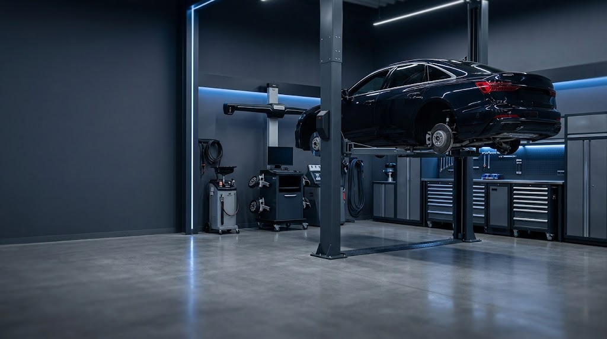
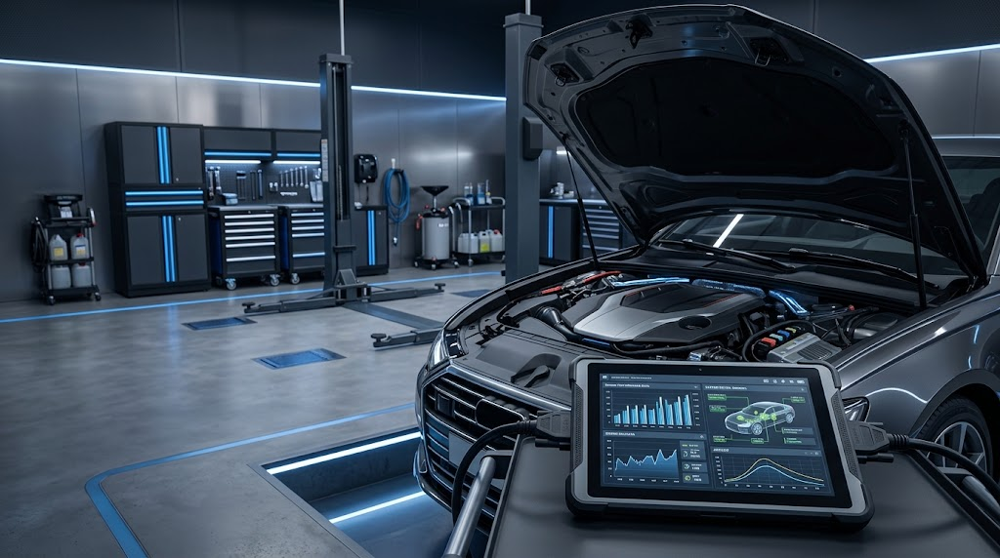
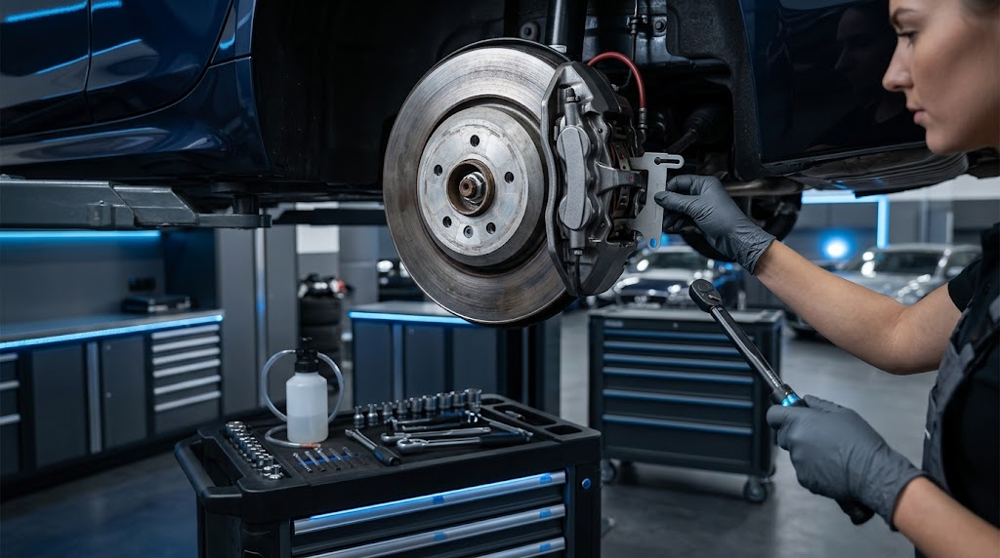
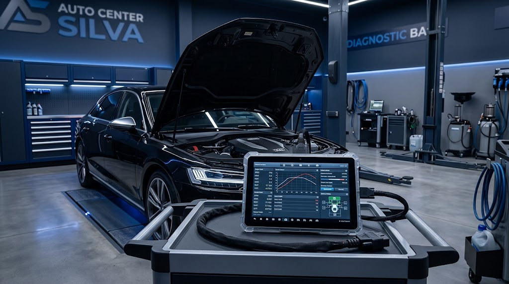

01
Troca de óleo
Manutenção preventiva para ajudar a preservar o desempenho e o motor.

CENTRO AUTOMOTIVO
Manutenção, revisão e serviços automotivos com atendimento profissional e foco na segurança do seu veículo.

POR QUE ESCOLHER
Cuidar de um veículo vai muito além de corrigir um problema. É entender a necessidade, orientar o cliente e executar cada serviço com atenção.
Explicamos o serviço antes de qualquer procedimento.
Processos organizados e atenção aos detalhes.
Manutenção pensada para preservar seu veículo.
NOSSOS SERVIÇOS
Serviços essenciais para manutenção e conservação do veículo.

Manutenção preventiva para ajudar a preservar o desempenho e o motor.
Verificação e manutenção do sistema de frenagem do veículo.
Avaliação dos componentes para mais estabilidade e conforto.
Cuidados para manter a dirigibilidade e o desgaste adequado dos pneus.
Identificação de possíveis falhas para orientar o próximo passo.
Conferência dos principais itens de manutenção do veículo.
NOSSA ESTRUTURA

DiagnÛsticoPRECISA DE ATENDIMENTO?
Entre em contato para saber mais sobre os serviços e agendar uma avaliação.